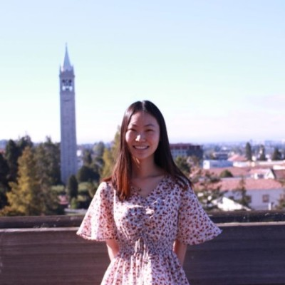

|  |
I am currently a third year Ph.D. candidate in Operations Research at UC Berkeley's IEOR department, advised by Prof. Javad Lavaei.
Previously, I received my B.S. degree in Mathematics and Physics from Department of Physics at Tsinghua University.
My research interests include machine learning theory and nonconvex optimization, especially low-rank matrix optimization. ContactUniversity of California, Berkeley |